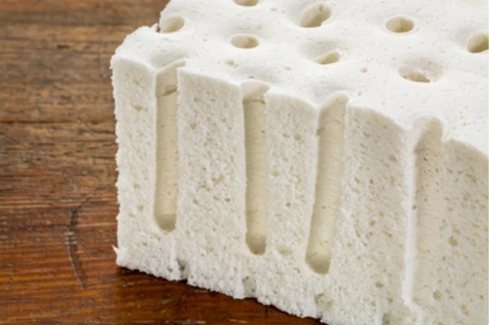
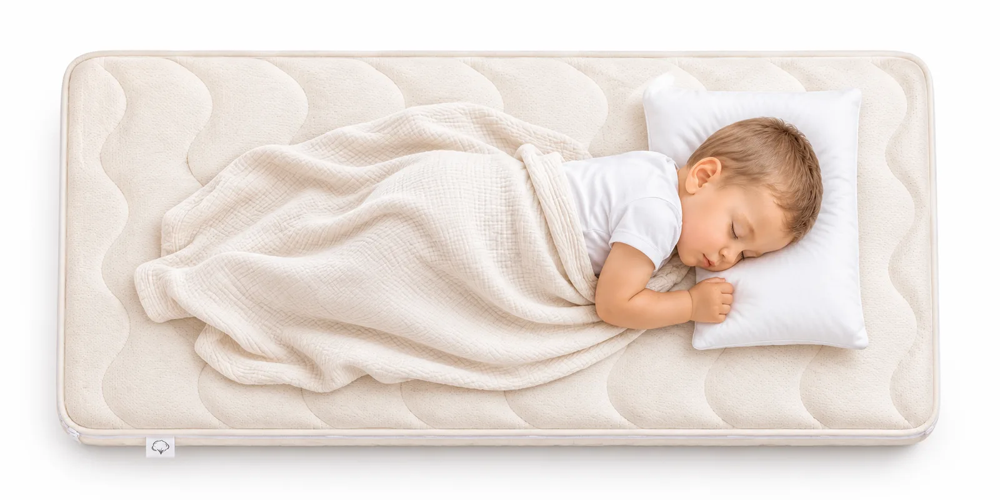
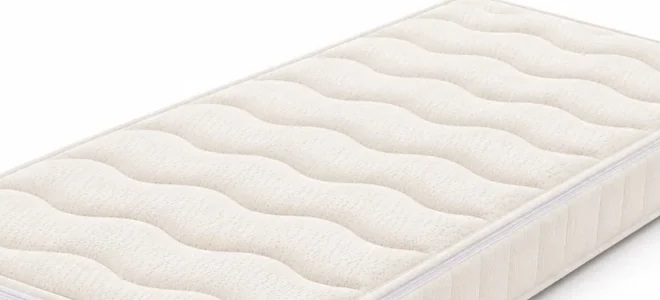
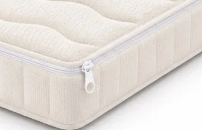
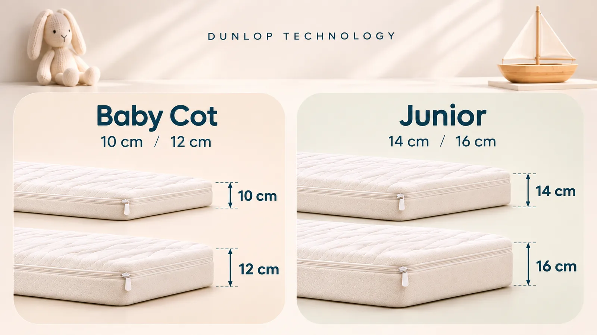

From the first nights in the cot to the bed that follows, your child sleeps on a single core of 100% natural Dunlop latex, in a quilted 100% cotton cover that comes off. Nothing else is added: no other materials, and no glued layers.
Closed
Open
Latex core

Quilting
Zip
In the cot
From above

In brief
100% natural Dunlop latex
One-piece core, no glued layers
Ventilation channels
100% cotton cover that comes off
OEKO-TEX® Standard 100
A natural latex baby pillow, a gift
4 depths10 · 12 · 14 · 16 cm
10 sizesBaby Cot 4 · Junior 6
MediumOne firmness
Up to 20 daysSpecial packaging
“100% natural latex” needs the supplier’s material declaration or a test certificate for this core before publication. The “Bio” in the logo may suggest an organic certification: confirm it is acceptable for this product.
Choose and discover
Choose on one side. See it on the other.
Select a collection, a size and a depth for your child’s cot or bed; the matching view opens next to your choice. Each collection has its own two depths. Every measurement is given in centimetres and inches. Your choice is set in the options on this page, so the price you see is always the store’s own.
1 · Select your collection
Baby Cot SizeCots and cot beds
Junior SizeJunior and single beds
2 · Select your size, width × length
Baby Cot Size
60 × 110 cm23.6 × 43.3 in
60 × 120 cm23.6 × 47.2 in
70 × 130 cm27.6 × 51.2 in
70 × 140 cm27.6 × 55.1 in
Junior Size
70 × 160 cm27.6 × 63.0 in
80 × 160 cm31.5 × 63.0 in
80 × 180 cm31.5 × 70.9 in
80 × 200 cm31.5 × 78.7 in
90 × 190 cm35.4 × 74.8 in
90 × 200 cm35.4 × 78.7 in
3 · Select your depth
Baby Cot: 10 or 12 cm · Junior: 14 or 16 cm
10 cm3.9 in
12 cm4.7 in
14 cm5.5 in
16 cm6.3 in
Firmness: Medium, chosen for a growing child, in every size and depth.
Look closer
One piece. A single moulded block of 100% natural Dunlop latex for your child, with ventilation channels you can see and no glued layers.
100% cotton. A quilted cover with wide, flowing waves.

Opens along the side. A full-length zip, so the core can be seen and checked.

Find the right fit
Cot and bed sizes differ between manufacturers. The right mattress is the one that matches the inside of your frame.
Measure inside. Length and width of the cot or bed frame, not the outside.
Match the size. It should fit snugly, with no gaps at the sides or ends.
Check your cot. Follow its instructions on mattress size and maximum mattress depth.
Two collections. Four depths.
Length and width stay exactly the same within a size. Only the depth of the latex core changes. Baby Cot comes in 10 and 12 cm. Junior comes in 14 and 16 cm.
10cm
3.9 in Baby Cot
12cm
4.7 in Baby Cot
14cm
5.5 in Junior
16cm
6.3 in Junior
Drawn to scale against each other.

Choose what fits. A deeper mattress is not automatically a better one. The right depth is the one that suits your cot or bed, so check its construction and its maximum mattress depth before you choose.
Every size and depth, one price each.
Each price is read from the store’s own options for this product, separately for Baby Cot and Junior. Press a price to choose that size and depth.
Choose a size and a depth in the options on this page to see the price.
Look inside
Open the zip and the whole mattress is in view: a cotton cover over one block of natural latex.
2 · Full-length zip. The cover opens along the side.
3 · One-piece core. A single block of natural Dunlop latex.
4 · Ventilation channels. Formed in the core during moulding.
Two materials. Each with one job.
Core
Natural Dunlop latex
Material
100% natural latex
Process
Dunlop Technology, moulded as one piece
Structure
Vertical ventilation channels through the core
Cover
Quilted cotton
Fabric
100% cotton
Finish
Wide transverse quilting waves
Closure
Zip along the side
Firmness
Medium.
One firmness for the whole Baby & Junior range, in every size and depth.
Our adult, weight-based firmness recommendations do not apply to babies and children and are not used for this range.
Sizes and depths are the owner’s final configuration (Baby Cot 10 / 12 cm, Junior 14 / 16 cm). Cot compatibility, the maximum mattress depth of common cots and the manufacturing tolerances are still to be confirmed.
Inside and Materials: confirm with the manufacturer whether the cover is designed to be removed by the customer (not only opened), how the ventilation channels are described in their technical sheet, and whether the quilting contains any wadding (if so it must be named and falls within UK fire-safety scope).
Firmness, highest priority: UK safer sleep guidance asks for a firm, flat mattress for babies, and BS EN 16890 includes a firmness test: Medium must be confirmed on the finished mattress, and may need to become Firm for Baby Cot sizes. The owner’s reason for Medium (stability of a child’s skeletal system during growth) is a health claim: it is deliberately not on the page and needs a verified source and agreed wording before any version of it is published.
A natural environment for your child
From 100% natural latex.
Your child’s mattress is made of two natural parts only: a core of 100% natural Dunlop latex and a cover of 100% cotton. There are no other elements inside, and no glued layers.
100% natural latex core. Your child sleeps on Dunlop latex from the rubber tree, moulded as one piece.
100% cotton cover. A natural fibre, next to your child’s skin, quilted in wide waves.
A clean, hypoallergenic sleep environment. Made only from natural latex and cotton, with no other elements, and tested for harmful substances.
A core that breathes. Open cells and ventilation channels let air move through your child’s mattress, not only across its top.
A cover that comes off. The zip along the side opens the cover. It comes off and washes at 40 °C.
OEKO-TEX® Standard 100. Tested for harmful substances, for baby use.
Contains natural rubber latex. If anyone in your household has a latex allergy, please seek medical advice before you buy.
The baby pillow: its suitable age (written here as from 12 months, following the “no pillow under 12 months” safer-sleep guidance), its intended use and its instructions must be confirmed against the pillow’s own specification and safety assessment before publication. “Hypoallergenic” and the OEKO-TEX® Standard 100 statement are the owner’s: the certificate (number, product class, holder and validity) must name this product and its components before publication, and natural latex is a known allergen for some people. “Washes at 40 °C” and “no other elements” (including any wadding inside the quilting) are also to be confirmed with the manufacturer.
Comfort for your child
Stable support. Natural adaptation.
Support and adaptation need each other. Support comes from density. Adaptation comes from elasticity. Your child needs both, well balanced, and latex gives them together.
Your child stays on top. Your child does not sink into the mattress. Your child rests on it, always, free to turn and move.
Instant adaptation. No delay, as there is with memory foam. The latex answers the moment your child touches it, which helps your child sleep more comfortably.
A calmer night, for your child and for you. A good sleeping environment helps your child settle, and a settled child means more rest for you.
Ventilation for your child. Children need temperature comfort as much as adults do. Warmth and moisture are what microbes like: the more air moves through the core, the less welcoming it is to them.
Medium, for a growing child. A growing body needs steady, even support. Medium is chosen to balance your child’s weight and the support underneath, from the first cot to the junior bed.
Baby Cot or Junior
One natural philosophy. Two collections.
Designed for growing years. The two collections are not different levels of quality: they are two solutions for two stages, made from the same natural materials.
Baby Cot
For your child’s cot
Sizes
4 · 60 × 110 to 70 × 140 cm
Depths
10 cm · 12 cm
Made for
Baby cots and cot beds
Junior
For your child’s own bed
Sizes
6 · 70 × 160 to 90 × 200 cm
Depths
14 cm · 16 cm
Made for
The move to a bed, and the years that follow
Why four depths? Baby cots are built differently, so Baby Cot has two depths, 10 and 12 cm, and the right one depends on your cot’s construction and the maximum mattress depth its maker allows. A child’s own bed is used for longer, so Junior is made deeper, 14 and 16 cm, with more latex under your growing child over the years.
A deeper mattress is not automatically a better one. Choose the depth that suits your cot or bed.
Delivery
Delivery of your child’s mattress.
Delivery. Please allow up to 20 days for your child’s mattress to be prepared and delivered, in the size and depth you chose.
A special package. The mattress for your child arrives in a special package made for it. Remove all packaging, including any plastic wrapping, before use, and keep it away from children.
A gift for your child: our natural latex pillow. Every Baby & Junior mattress comes with our own baby pillow, specially developed and made from natural latex. It is packed together with your child’s mattress, at no extra cost.
How and when to use the pillow. It is a head pillow for sleep, for your child in a cot bed or a bed of their own. A baby under 12 months sleeps without a pillow, on a firm, flat mattress, so keep the cot of a baby under 12 months clear. Our pillow is for your child from 12 months, as the instructions supplied with it also state. Always follow current guidance from the NHS and The Lullaby Trust.
The cover
Your child’s cover: 100% cotton.
The cover is made of 100% cotton fabric, the part of the mattress closest to your child, quilted in wide, flowing waves. A zip runs along the side, so the cover opens and comes off, and the one-piece latex core inside can be seen whenever you like. The cover washes at 40 °C.
Wide quilted waves. The cotton is quilted in long transverse waves across the top.
A zip along the side. It opens the cover along its length.
Fabric
100% cotton
Finish
Wide transverse quilting waves
Closure
Zip along the side
Cover wording is limited to what is verified: 100% cotton, quilted, zip. Do not add organic, washable, waterproof, hypoallergenic or temperature claims for the cover until each is verified for this fabric. Confirm whether the cover is meant to be removed by the customer, and whether it contains wadding.
Pending · Quality & certification
Proof, product by product.
Each module is published only after its scope, holder and validity date have been checked for this product.
Finished mattress
BS EN 16890
Cot mattress safety test report, per size group.
Finished mattress
UK fire safety
Furniture and Furnishings (Fire) (Safety) Regulations evidence and the applicable ignitability test.
Latex core
Material certificate
Natural latex content and harmful-substance testing for this core.
Cotton cover
Textile certificate
Fibre content and textile testing for this fabric.
Not published until verified. Certificates for other Divine DunlopDreams products must not appear here unless their scope names this product or its components.
Care & compatibility
Before it goes in the cot.
Fit. Use it only in a cot or bed whose inner dimensions match the size you ordered, within the maximum depth given by the cot manufacturer.
Unpacking. Remove all packaging, including any plastic wrapping, before use, and keep it away from children.
Bedding. Use a fitted sheet made for the exact mattress size. Keep the sleeping surface flat and clear.
Cover. The cover comes off and can be washed at 40 °C. Follow the care instructions supplied with your mattress.
Contains natural rubber latex. If anyone in your household has a latex allergy, please seek medical advice before purchase.
Safer sleep. Always follow current guidance from the NHS and The Lullaby Trust, together with the instructions supplied with your cot.
Washability, waterproofing and cleaning temperature are deliberately not stated. Confirm the sewn-in care label and whether a mattress protector is recommended (and which type) before adding it.
Weight per size and depth · tolerances · country of manufacture · BS EN 16890 result · UK fire-safety evidence · lead time
Which depth should I choose?
Start with your cot or bed. Many cots state a maximum mattress depth; choose a depth within it. Baby Cot comes in 10 and 12 cm, Junior in 14 and 16 cm, and a deeper mattress is not automatically a better one.
Is a pillow included?
Yes. Every Baby & Junior mattress comes with our own baby pillow, specially developed and made from natural latex, as a gift. A baby under 12 months sleeps without a pillow; the pillow is for your child from 12 months, in a cot bed or a bed of their own.
What is the difference between Baby Cot and Junior?
Baby Cot is for your child’s cot or cot bed, in four sizes and two depths, 10 and 12 cm. Junior is for your child’s own bed, in six sizes and two depths, 14 and 16 cm. Both are made from the same 100% natural latex core and 100% cotton cover.
What is the cover made of?
The cover is 100% cotton fabric, quilted in wide transverse waves, with a zip along the side.
How do I know the size will fit?
Measure the inside of the frame, length and width, and choose the matching size. The mattress should fit snugly with no gaps at the sides or ends.
Why only one firmness?
The Baby & Junior range is made in a single firmness, Medium, in every size and depth. A growing body needs steady, even support, and Medium is chosen to balance your child’s weight with the support underneath.
A natural environment for your child.
100% natural latex in a 100% cotton cover, made for your child’s cot or bed, in the size and depth you select in the options on this page.